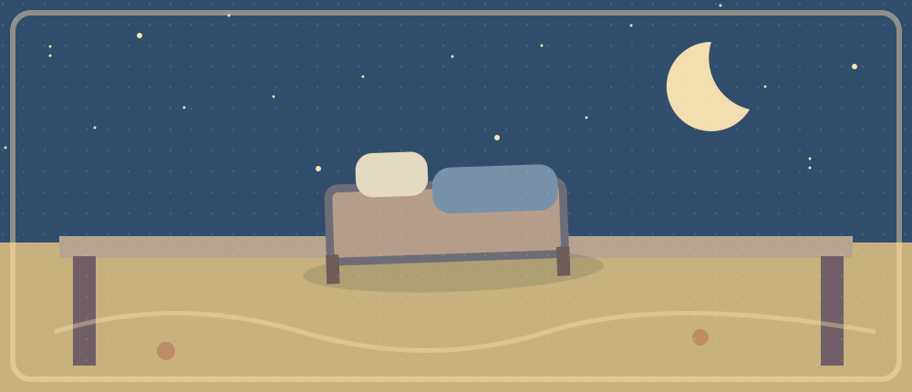

Sleep and Study

Today's only article: Sleeping More May Help College Students in the Classroom
文章报道一个课堂睡眠挑战及其局限；参与者的表现与因果证明不是同一回事。
Listening · 6 min
Sleeping More May Help College Students in the Classroom · VOA Learning English
Direct audio: Publisher MP3 · Transcript: English text · Source page: VOA article
Listen first for meaning. Then select one 20–40-second clip, match its English sounds to the transcript, hide the text and listen again.
Optional Chinese context (open after first attempt)
文章报道一个课堂睡眠挑战及其局限；参与者的表现与因果证明不是同一回事。
Find the precise breakdown · 6-minute sequence
2 min gist → 2 min one clip and English transcript → 2 min no-text listening. Keep these separate: content understood from context ≠ English words recognized by ear.
课程活动得到什么观察？专家为什么对结论保持谨慎？
Reading · 9 min
Read the whole article · Sleeping More May Help College Students in the Classroom
First skim the complete article (4 min), then deeply read the selected paragraphs (3 min), then rebuild its global model without looking (2 min).
Selected paragraphs in the same article
- Context / question — 开篇介绍大学生睡眠问题的段落. Locate it on the same VOA page, then explain why it matters.
- Mechanism / example — 描述老师给学生设定睡眠目标的段落. Locate it on the same VOA page, then explain why it matters.
- Outcome / qualification — 关于观察结果及批评意见的段落. Locate it on the same VOA page, then explain why it matters.
Sentence → paragraph → whole text
Locate one connector, referent or limitation in each selected paragraph. Then explain its role in the overall argument. 小型课堂活动和专家批评不能被简化为对所有学生的普遍因果证明。
Active language · 4 min
Meaning → English (try before revealing): “熬夜调试挤占了我的睡眠时间。”先试着说出完整英文。
Reveal the one expression
cut into
Use it to paraphrase today's article or your experience; it is not presented as a verbatim source quotation.
Transfer: 换成篮球训练、玩游戏、赶作业挤占另一件事的时间。
Pronunciation
Use the 20–40-second source clip if the expression occurs there. Otherwise practise your original transfer sentence with the browser's speech synthesis or your configured Obsidian coach.
Speaking · 4 min
- Why do some students sleep less than they need?
- What change did the teacher ask students to try?
- What did the report observe, and what remains uncertain?
- What small change could protect your own study time without making a universal claim?
Repair one point
Answer freely, pinpoint one missing relation, check only that spot, and retry with your own example.
Writing · 5 min
80–120 words. Should universities run optional sleep challenges to support learning? Discuss one possible benefit and one limitation of the reported classroom activity.
0 words · saved locally in this browser
Minimal structure (open after drafting)
Position → article detail → own example → limitation → conclusion. No model essay.
Review · 2 min
Without the transcript, explain the article's structure and describe what you could actually hear. Tomorrow: replay the clip with no text and retrieve the expression in a different situation.
8-minute busy version
2 min audio · 2 min whole-article skim + one paragraph · 1 min transcript alignment · 1 min listen without text · 1 min transfer speaking · 1 min micro-writing.